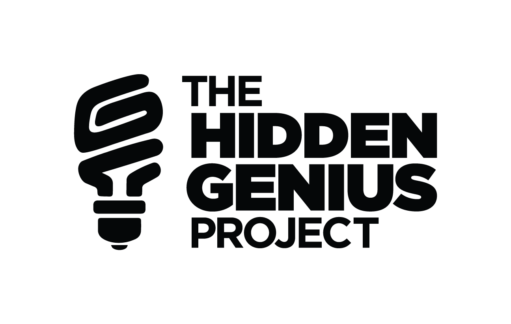

Hidden Genius Project
The Hidden Genius Project trains and mentors black male youth in technology creation, entrepreneurship, and leadership skills to transform their lives and communities. This program is the reason I started this website. If I didn't attend this program I wouldn't have made this website. They provided us with tech and installed many skills into our lives that could help us and our families now and in the future. I really appreciate this program and I hope it continues to help young black males on their jounrney to become men.